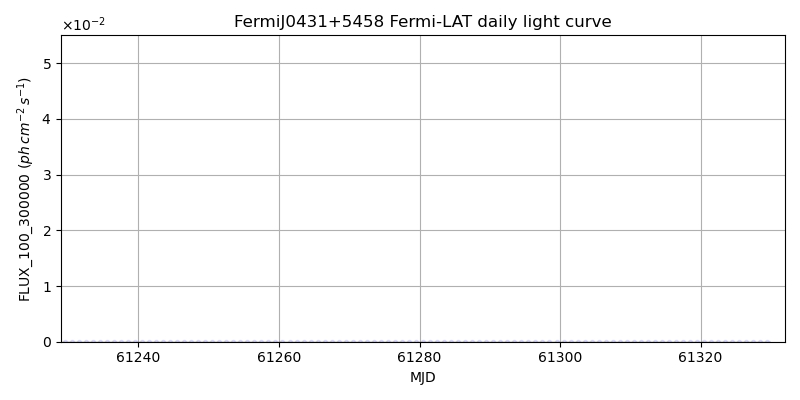
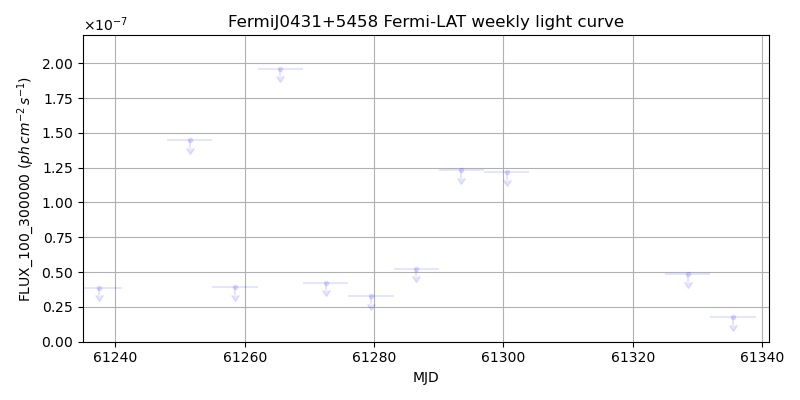
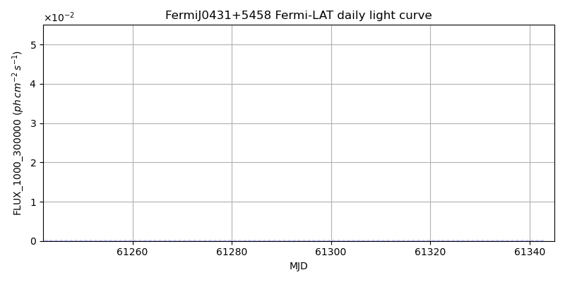
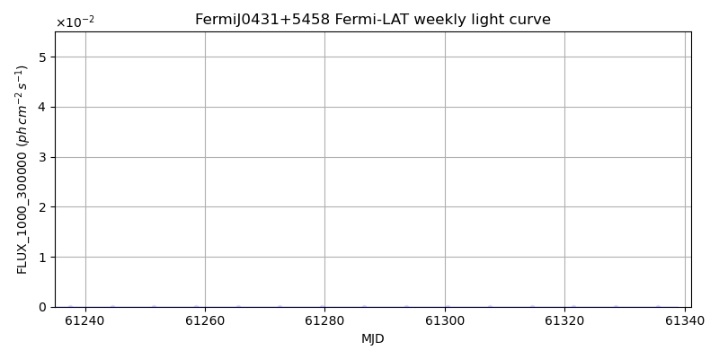

LAT Lightcurve site: https://fermi.gsfc.nasa.gov/ssc/data/access/lat/msl_lc/source/Fermi_J0431p5458
NED: Query
Time of last update of this page: UT: 2026-10-30 15:14 (MJD: 61343.635)
| Property | Value |
|---|---|
| R.A. | 4:31:26.40 |
| Dec. | 54:58:48.0 |
| z | 0.000 |
| 3FGL SpectrumType | |
| 3FGL PL Index | -1.00 |
| 3FGL Flux_100_300000 | -1.00e+00 |
| 3FGL Flux_1000_300000 | -1.00e+00 |
| 3FGL Flux >200 GeV | -1.00e+00 |
| 3FGL Extrap. Crab >200 GeV | -1.00 |
| 3FGL Flux After EBL Absorption >200GeV | -1.00e+00 |
| 3FGL EBL Crab Fraction >200GeV | -1.00 |

| MJD | dMJD | Flux | dFlux | Frac3FGL | FracCrab>200GeV | EBLFracCrab>200GeV |
|---|---|---|---|---|---|---|
| 61338.50 | 0.50 | 4.32e-07 | 0.00e+00 | 0.00 | 0.00 | -0.00 |
| 61339.50 | 0.50 | 1.93e-07 | 0.00e+00 | 0.00 | 0.00 | -0.00 |
| 61340.50 | 0.50 | 6.42e-07 | 0.00e+00 | 0.00 | 0.00 | -0.00 |
| 61341.50 | 0.50 | 2.07e-07 | 0.00e+00 | 0.00 | 0.00 | -0.00 |
| 61342.50 | 0.50 | 2.07e-07 | 0.00e+00 | 0.00 | 0.00 | -0.00 |

| MJD | dMJD | Flux | dFlux | Frac3FGL | FracCrab>200GeV | EBLFracCrab>200GeV |
|---|---|---|---|---|---|---|
| 61307.50 | 3.50 | 2.63e-07 | 0.00e+00 | 0.00 | 0.00 | -0.00 |
| 61314.50 | 3.50 | 2.78e-07 | 0.00e+00 | 0.00 | 0.00 | -0.00 |
| 61321.50 | 3.50 | 5.16e-07 | 0.00e+00 | 0.00 | 0.00 | -0.00 |
| 61328.50 | 3.50 | 4.84e-08 | 0.00e+00 | 0.00 | 0.00 | -0.00 |
| 61335.50 | 3.50 | 1.75e-08 | 0.00e+00 | 0.00 | 0.00 | -0.00 |

| MJD | dMJD | Flux | dFlux | Frac3FGL | FracCrab>200GeV | EBLFracCrab>200GeV |
|---|---|---|---|---|---|---|
| 61338.50 | 0.50 | 1.40e-08 | 0.00e+00 | 0.00 | 0.00 | -0.00 |
| 61339.50 | 0.50 | 3.54e-08 | 0.00e+00 | 0.00 | 0.00 | -0.00 |
| 61340.50 | 0.50 | 1.94e-08 | 0.00e+00 | 0.00 | 0.00 | -0.00 |
| 61341.50 | 0.50 | 1.64e-08 | 0.00e+00 | 0.00 | 0.00 | -0.00 |
| 61342.50 | 0.50 | 4.43e-08 | 0.00e+00 | 0.00 | 0.00 | -0.00 |

| MJD | dMJD | Flux | dFlux | Frac3FGL | FracCrab>200GeV | EBLFracCrab>200GeV |
|---|---|---|---|---|---|---|
| 61307.50 | 3.50 | 5.12e-09 | 0.00e+00 | 0.00 | 0.00 | -0.00 |
| 61314.50 | 3.50 | 4.14e-09 | 0.00e+00 | 0.00 | 0.00 | -0.00 |
| 61321.50 | 3.50 | 7.00e-09 | 0.00e+00 | 0.00 | 0.00 | -0.00 |
| 61328.50 | 3.50 | 8.23e-09 | 0.00e+00 | 0.00 | 0.00 | -0.00 |
| 61335.50 | 3.50 | 4.99e-09 | 0.00e+00 | 0.00 | 0.00 | -0.00 |
--------------------------------------------------------- Using user-supplied coords: 4:31:26.40 54:58:48.0 2000 --------------------------------------------------------- FLWO UT night of: 2026-10-31 Local Sid. @ Midnight: 02:14 Sunset (-15.0) (local, UT): 18:44 01:44 Sunrise (-15.0) (local, UT): 05:31 12:31 Moonrise (local, UT): 21:49 04:49 Moonset (local, UT): Moon phase: 0.68 --------------------------------------------------------- AzTime LSID UT Obj_el Obj_az Mn_el Mn_az Sep. --------------------------------------------------------- 18:44 20:57 01:44 13.5 32.6 -27.0 28.6 40.6 19:14 21:27 02:14 17.0 35.1 -23.9 34.8 40.9 19:44 21:57 02:44 20.8 37.3 -20.2 40.4 41.1 20:14 22:27 03:14 24.8 39.1 -16.1 45.6 41.3 20:44 22:58 03:44 28.9 40.6 -11.6 50.4 41.5 21:14 23:28 04:14 33.1 41.6 -6.7 54.8 41.7 21:44 23:58 04:44 37.3 42.2 -0.9 58.8 41.9 22:14 00:28 05:14 41.6 42.3 3.8 62.5 42.1 22:44 00:58 05:44 45.9 41.7 9.2 66.0 42.3 23:14 01:28 06:14 50.1 40.2 14.8 69.3 42.5 23:44 01:58 06:44 54.2 37.8 20.6 72.5 42.6 00:14 02:28 07:14 57.9 34.0 26.5 75.5 42.8 00:44 02:58 07:44 61.3 28.7 32.5 78.6 43.0 01:14 03:28 08:14 64.0 21.4 38.5 81.7 43.1 01:44 03:58 08:44 65.8 12.2 44.7 84.9 43.3 02:14 04:28 09:14 66.6 1.7 50.8 88.3 43.4 02:44 04:59 09:44 66.2 351.0 57.0 92.2 43.6 03:14 05:29 10:14 64.7 341.3 63.2 97.0 43.7 03:44 05:59 10:44 62.2 333.4 69.3 103.5 43.9 04:14 06:29 11:14 59.0 327.4 75.2 113.7 44.0 04:44 06:59 11:44 55.4 323.2 80.4 133.8 44.2 05:14 07:29 12:14 51.4 320.4 83.0 177.6 44.3 05:31 07:46 12:31 49.0 319.3 82.2 206.9 44.4 --------------------------------------------------------- Dark hours >55 deg.: 0.00